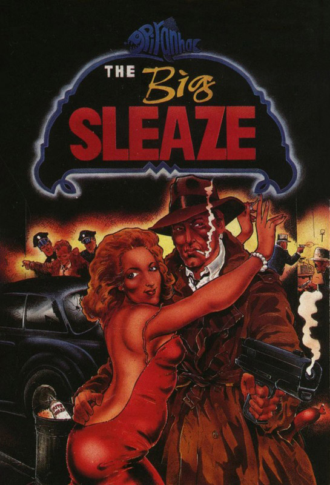
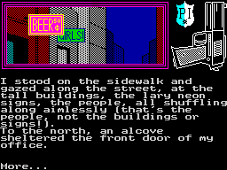
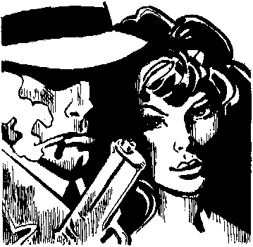

The Big Sleaze


{kind=link}

| Publisher: | Piranha |
| Price: | £9.95 |
| Year: | 1987 |
| Source: | CRASH, Issue 43 |

Now and again a piece of software looks a winner from the moment I open the package. Fergus McNeill — the comic genius behind Bored of The Rings, Robin of Sherlock and The Boggit, all spoofs of existing works, and more recently The Colour of Magic — has teamed up with a company that knows how to handle a commercial proposition. The result is a marvellous send-up of the New York private detective slouching his way around the Big Apple of the Thirties.
Everything about this project gels to provide a thoroughly entertaining trip through the sleazy low life of Manhattan and beyond. The programming is competent and the presentation pleasing, with a highly readable typeface, but the main attraction is the writing style, which is so good it’s hard to believe the text wasn’t taken from a real novel.

Spillade as he goes for a teamp on the
lonely streets of Manhattan. Did the
tramp enjoy it? Find out in The Big
Sleaze — Delta 4’s latest spoof
adventure
Here McNeill graduates from adapting existing works, such as Terry Pratchett’s book The Colour of Magic, to using his own stories. McNeill’s narrative style is refreshing, in the past tense rather than the present tense which jars in so many lesser games.
The Big Sleaze concerns the world of Sam Spillade, a dimwit private detective whose office, way up on 3024th Street, reveals to those passing just how thick Spillade is — he thought his window sign would look better if it could be read from the inside of his office. Puzzle at the lack of business his clever sign elicits, he competes with the motto ‘No case too small... or too cheap.’
The first two cases to breeze into Spillade’s unkempt offices are vastly different: a dame from out of town, and a patchwork dog. The dame has spent two weeks hanging out in Joe’s diner waiting for her long-lost father to show; the dog has a note and a piece of a photograph its owner would rather not see put back together. Luckily for the owner, the parts of the photo are scattered about the city — but it’s a taxing job for Spillade.
The screen consists of a simple picture with a permanent gun and PI badge in the top half, and the copious text pushing the picture off the screen from below. Anyone who’s played The Boggit will be familiar with McNeill’s verbose location descriptions and EXAMINE reports. Giving too many examples of these might ruin the game — but suffice to say that just about everything can be examined or poked about.
The ability to carry only five objects at a time is a restriction, not alleviated by the wallet which might have carried some of the smaller items. So it might be a good idea to smoke your last Lucky at the very start, with your feet up on the desk, giving rise to this short funny: ‘I smoked my last Lucky and threw the stub away. I was going off these butts, slowly but surely. I guessed maybe I’d try putting the filter end in my mouth next time.’

Try another short one, this time concerning the silly sleuth’s coat: ‘A genuine, trendy detective-style raincoat. It cost me an arm and a leg from the NY equivalent of Burtons (not literally, of course, otherwise it wouldn’t have fitted so well.)’ And somewhere in the adventure you might explode some dynamite before it explodes on you: ‘The dynamite had a fuse at on end and ‘You die, PI!’ written on it in large friendly letters’.
Time must be taken into account while playing The Big Sleaze — otherwise you might chance upon a bar in the dead of night when even Manhattan drinking dens close for a few hours of shuteye. On the same theme, lighting the fuse to the dynamite will allow a few moments to retire to a safe distance (there’s a clue in that last line, folks!)
WAIT is a useful command to pass moments when Spillade has no choice but to sit it out. And the command EXAMINE can be shortened to X. I discovered this last one myself but the instructions do tell you of the SAY TO character command — and a HELP routine which may give the occasional clue, but too cryptically to be useful.
The effects of locking the door at the base of Spillade’s office building puzzled me. This prevents some hoodlums entering the building and causing trouble, yet somehow the dame and the dog get in with no bother at all. Curious.
The Big Sleaze is a three-part adventure and comes complete with an electronic magazine, Sceptical 3. The game’s chief asset, apart from dealing with a familiar and highly commercial theme, is its well-written prose. Fergus McNeill has excelled himself with this one while still providing the laughs (some rude) which have made his name.
COMMENTS
| Difficulty: | One or two tricky bits |
| Graphics: | Simple |
| Presentation: | Neat |
| Input facility: | Little beyond verb/noun |
| Response: | Fast |
| General rating: | A superb read |
| Atmosphere: | 95% |
| Vocabulary: | 89% |
| Logic: | 90% |
| Addictive qualities: | 95% |
| Overall: | 93% |